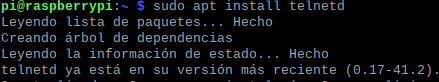
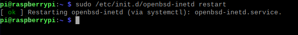
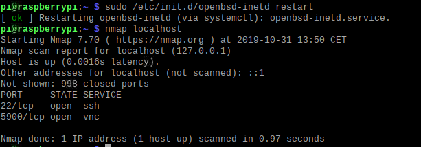
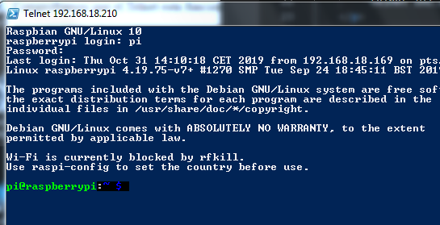
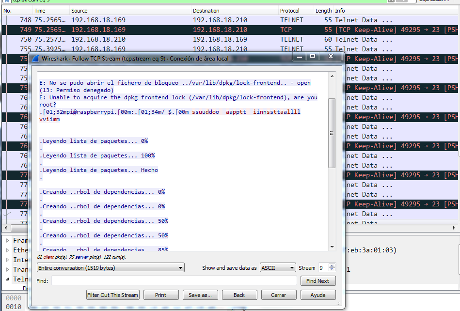

PASO 1
Instalar Telnet mediante el siguiente comando
sudo apt install telnetd
PASO 2
Despues ejecutamos el siguiente comando para iniciar el servidor Telnet
sudo /etc/init.d/openbsd-inetd restart
PASO 3
Comprobamos que el Telnet esta funcionando con un:
snmap localhost
PASO 4
Cuando lo tengamos ejecutado nos conoectaremos con el comando (192.168.18.210 es la Ip de la Raspberry):
telnet 192.168.18.210
PASO 5
Ejecutamos algunos comandos desde Telnet y vamos al wireshark a analizar trafico.
Follow TCP Stream
